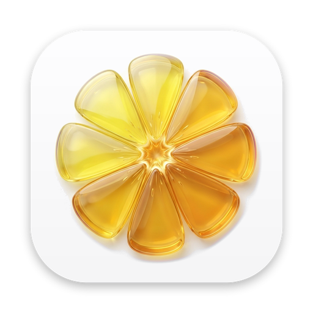
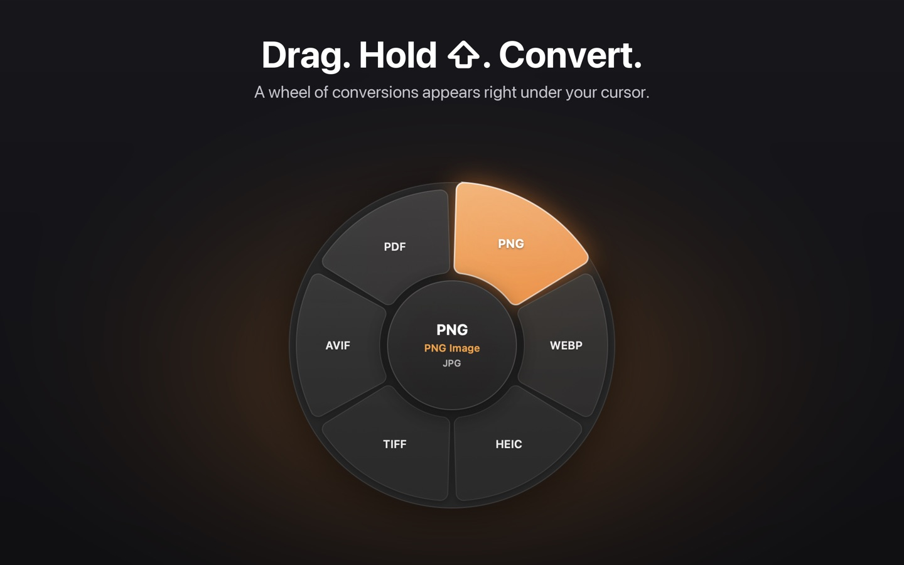
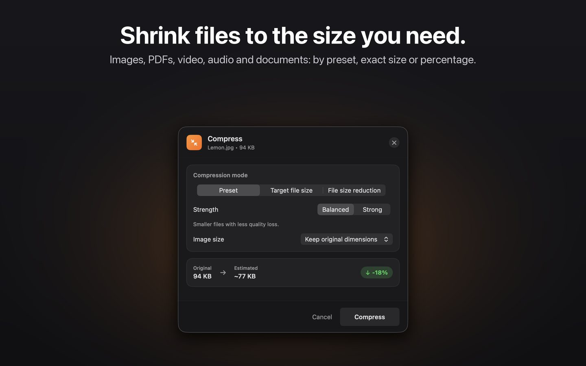
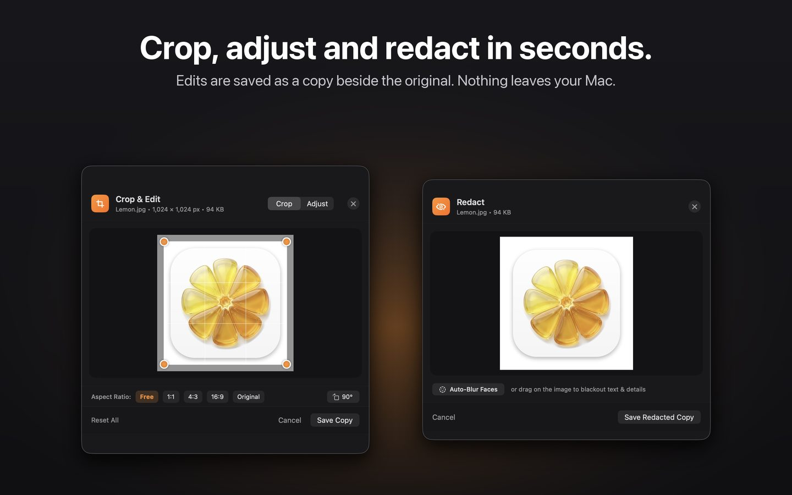

Hold a key while dragging any file in Finder and a wheel of conversions and tools appears right under your cursor. Drop it on a slice. Done.
Download on the Mac App Store Free to try · 50 actions free · macOS 14 or later · Apple silicon
Citron lives in your menu bar and stays out of the way until you need it.
Every conversion and edit happens on your Mac. Nothing is uploaded.
Pick a preset, type a target size, or choose how much smaller. Citron shows the estimated result before you compress.


Crop, adjust, annotate and redact in a small window. Save over the original, or keep it and save a copy.
Your first 50 actions are free. After that, unlock Citron forever with a single purchase. No subscription, no account, no tracking.